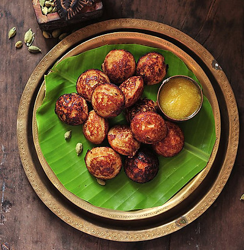

🥞 Appam Recipe

Ingredients
- 1 cup raw rice
- 1/4 cup cooked rice
- 1/2 cup grated coconut
- 1/4 tsp dry yeast
- 1 tbsp sugar
- Salt to taste
- Water as needed
Instructions
- Soak raw rice for 4-5 hours. Drain.
- Grind soaked rice with cooked rice, coconut, sugar, and water to a smooth batter.
- Dissolve yeast in warm water and add to the batter. Mix well.
- Ferment the batter overnight or for 8-10 hours.
- Add salt, mix gently. Heat an appam pan, pour batter and swirl to coat edges.
- Cover and cook for 2-3 minutes until edges are crisp and center is soft.
- Serve hot with vegetable stew or coconut milk.
Serve With
- Vegetable stew
- Coconut milk
- Chutney
📝 Tip: Use fresh coconut for best flavor, and ferment in a warm place for soft, fluffy appams.